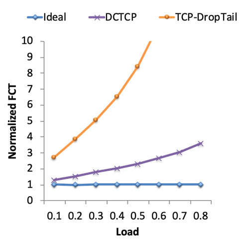
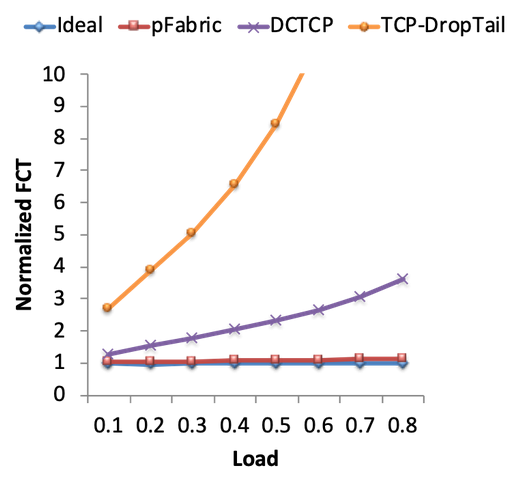

Congestion Control in Datacenters
Why are Datacenters Different?
We’ve seen that datacenter networks have additional constraints (e.g. physically in one building, owned by one operator) compared to general-purpose networks. This can lead to special protocols that exploit these special characteristics of the network. In this section, we’ll explore TCP congestion control algorithms that may not work on the general Internet, but are effective in datacenter contexts. This is an active area of research and development.
First, we should answer: What makes the congestion control different in a datacenter?
Recall that packet delay consists of transmission delay (time to signal the bits on the wire, determined by bandwidth), propagation delay (time for bits to travel across wire), and queuing delay.
In datacenters, transmission delay is usually relatively small (remember, we have high-capacity 10 Gbps links). Propagation delay is also relatively small in datacenters (remember, all the servers are in the same building). As a result, in datacenters, queuing delay is often the dominant source of delay. By contrast, in the wide-area Internet, the propagation delay could be orders of magnitude larger (e.g. packets could have to travel across the country), and is a more common dominating source of delay.
Recall that TCP congestion control deliberately fills up queues until packets get lost (we detect congestion by checking for loss). The TCP designers had not considered datacenter contexts, where queuing delay can have a much larger impact on performance.
The problem of large queues is exacerbated in datacenters, because unlike in the wide-area Internet, most datacenter connections fall into one of two categories. Most connections are mice, which are short and latency-sensitive. For example, a web search query and the results page contain a very small amount of data, but we want to return the results to the user very quickly. By contrast, some connections are elephants, which are large and throughput-sensitive. For example, backing up data from one server to another server requires a long-running connection that sends a lot of data at high throughput.
If we run TCP congestion control with these two types of connections, the elephants will increase their rates until the queues are all filled up. Now, any subsequent mice will be stuck in the queues, causing the mice to be delayed.
In order to maximize performance for these specific types of connections, datacenter congestion control algorithms must avoid filling up queues. Many datacenter-specific solutions have been developed in recent years.
For example, BBR was released by Google in 2016. In this approach, instead of detecting congestion by checking for loss (which requires queues to be full), we instead detect congestion by checking for packet delay.
DCTCP: Feedback from Routers
DCTCP (Datacenter TCP) was released in 2010 by Microsoft, and is now widely used (e.g. implemented in the Linux kernel).
Recall that the IP header has an ECN bit, and the router can enable this bit to indicate that it’s congested. When the packet reaches the destination, the ack will also have the ECN bit set, and this tells the sender to slow down.
In DCTCP, routers will enable the ECN bit when the queue length exceeds some threshold. This allows senders to detect and adapt to congestion earlier (as the queue is filling up, before the queue gets totally full).
In response to congestion, the sender reduces the rate in proportion to the number of packets with ECN markings. This allows the sender to adapt to congestion more gently. Instead of binary decision (congestion or no congestion), the sender can detect that some congestion might be happening, and slightly decrease the rate to compensate.
The ECN bit is not very effective in the wide-area Internet because not all routers support it. However, in a datacenter, the operator controls all the switches and can have them all toggle the ECN in a consistent way. In practice, implementing DCTCP at hosts and routers is a relatively small change.
To measure how DCTCP performs, we can measure flow completion time (FCT), which measures the time between the first byte being sent and the last byte being received. As a benchmark, the ideal FCT is the completion time if we used an omniscient scheduler that had global knowledge of the entire network and all connections. The scheduler could then use that knowledge to optimally schedule flows and allocate bandwidth to flows.

This graph shows the normalized FCT, which is a ratio of actual FCT to ideal FCT. This tells us how much worse we’re doing, compared to the ideal congestion control algorithm. We can see that standard TCP congestion control performs 3x worse than ideal, and up to 10x worse than ideal if the load on the network is higher. By contrast, DCTCP performs significantly better than standard TCP congestion control. DCTCP connections are finishing much faster, with less queuing delay.
pFabric: Packet Priorities
We saw that the issue in datacenters is that mice can be trapped in queues behind elephants. What if we gave the mice some way to skip to the front of the queue so they could complete faster?
To prioritize mice, we will assign a priority number to every packet. The priority is computed as the remaining flow size (number of unacknowledged bytes). Lower numbers have higher priority.
With this system, mice packets will be high-priority (flow sizes are very low). Elephants will be low-priority, though the last few bytes in an elephant connection will be higher-priority. This has the effect of prioritizing connections that are almost-done (even if they’re larger elephant connections).
To implement this idea, recall that IP packet headers have fields to indicate the priority of a packet. In pFabric, each packet carries a single priority number, and switches are modified so that they send the highest-priority packet. If the queue is full, the switch will drop the lowest-priority packet.
With the priority system in place, senders can now safely transmit and retransmit packets at full line rate, without needing to adjust their rate for congestion control. Senders only need to reduce their rate in cases of extreme loss (e.g. timeout).
If we look at the graph of FCTs again, we see that pFabric performance is even better than DCTCP, and is very close to ideal.

Why does pFabric work so well? Elephants and mice travel together, and everybody is sending at full line rate, which ensures full utilization of the available bandwidth. We don’t have to waste time on slow start. Also, we can avoid collapses because most of the packets in large elephants are low-priority. The priority system ensures that mice packets still get through the queue with low latency.
Implementing this system requires non-trivial changes at both switches and end hosts, and requires full control of both switches and end hosts. Switches need to implement a priority system, and senders need to replace their TCP implementation to send at full line rate. Still, pFabric is a good example of networks (switches) and end hosts cooperating to achieve good performance.